|
|
| sea anemones text index | photo index |
| Phylum Cnidaria > Class Anthozoa > Order Actiniaria > Genus Stichodactyla |
| Giant
carpet anemone Stichodactyla gigantea Family Stichodactylidae updated Dec 2024
Where seen? This enormous colourful anemone with short skinny tentacles is commonly seen on our Southern shores, usually on coral rubble near reefs. It is also sometimes seen on coral rubble on our Northern shores. Features: Those seen about 40-50cm in diameter when exposed out of water. The oral disk expands when submerged. The large oral disk covered with short tentacles so that it resembles a shaggy carpet. The oral disk is often folded and rarely held flat against the surface, unlike Merten's carpet anemone. The long body column is usually buried or inserted into a crevice and ends in a pedal disk that anchors the animal. Body column is sometimes colourful (bright pink, orange, yellow). Bumps (verrucae) appear as rows of spots, generally in bright colours (pink, purple). They are non-adhesive and found on the upper part of the body column. Tentacles short (about 1cm), narrow and uniform in length. Usually brown or purplish with lighter coloured tips. The tentacles are not very tightly packed and when submerged, are usually in constant motion. The tentacles are very sticky and may stick to a finger and break off. It does not have a fringe of long-short tentacles at the edge of the oral disk like Haddon's carpet anemone. |
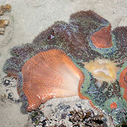 Terumbu Semakau, Jul 14 |
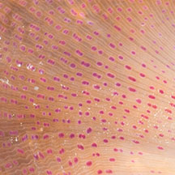 Rows of colourful verrucae on upper portion of the underside. |
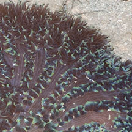 Tentacles not tightly packed. |
| Sometimes confused with other
large anemones and similar large cnidarians. Here's more on how
to tell apart the different kinds of carpet
anemones and large
sea anemones with long tentacles and large
'hairy' cnidarians. Carpet food: Carpet anemones harbour symbiotic single-celled algae (called zooxanthellae). The algae undergo photosynthesis to produce food from sunlight. The food produced is shared with the anemone, which in return provides the algae with shelter and minerals. The zooxanthellae are believed to give tentacles their brown or greenish tinge. Carpet anemones may also feed on fine particles that are trapped on their bodies. These anemones have not been observed to eat large animals. |
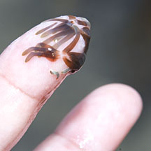 Tentacles may stick to finger and break off. Terumbu Semakau, Nov 12 |
 The Peacock-tail anemone shrimp and small False clown anemonefish in a Giant carpet anemone. Pulau Hantu, Jul 07 |
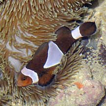 Clown anemonefish in a Giant carpet anemone. Sisters Island, Aug 09 |
| Giant friends: Besides the symbiotic
algae that lives inside the their tentacles several kinds of animals
have been associated with giant carpet anemones. These include anemone
shrimps (Periclimenes sp.), and fishes such as Three-spot dascyllus and anemonefishes (Amphiprion sp.) including A. akindynos, A. bicinctus, A.
clarkii, A. ocellaris, A. percula, A. perideraion, A. polymnus.
But so far, the only animals observed on giant carpet anemones were:
the Peacock-tail
anemone shrimps and the Clown anemonefish. Stinging carpet! Like other anemones, the Carpet anemone has stingers in its tentacles. Generally, these stings do not hurt human beings, but they can leave welts on sensitive skin. Carpet babies: There is not much information on how Carpet anemones reproduce. Human uses: Unfortunately, these beautiful anemones are harvested for the live aqurium trade. Status and threats: As at 2024, it is assessed not to be approaching the criteria for being listed among the threatened animals in Singapore. |
| Giant carpet anemones on Singapore shores |
On wildsingapore
flickr
|
| Other sightings on Singapore shores |
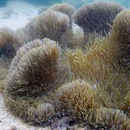 Terumbu Bukom, Nov 10 |
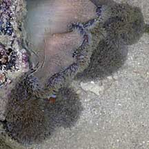 Pulau Pawai, Dec 09 |
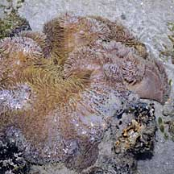 Pulau Berkas, May 10 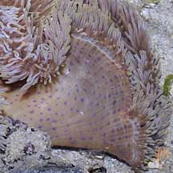 Bleaching. |
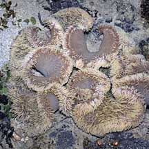 Pulau Senang, Jun 10 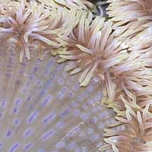 Bleaching. |
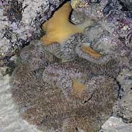 Pulau Senang, Jun 10 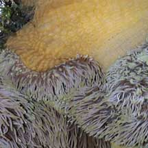 Bleaching. |
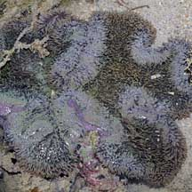 Terumbu Berkas, Jan 10 |
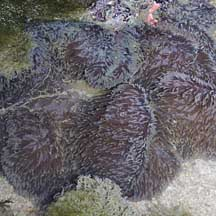 Terumbu Salu, Jan 10 |
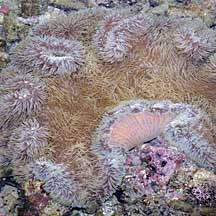 Pulau Biola, May 10 |
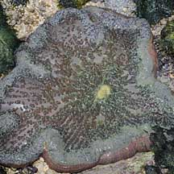 Pulau Biola, Dec 09 |
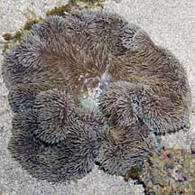 Pulau Berkas, May 10 |
Links
Other references
|